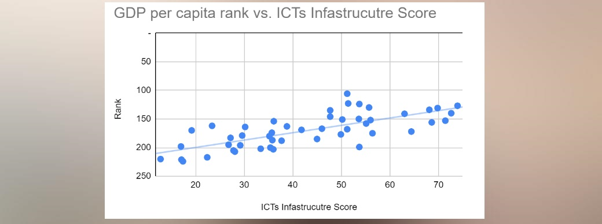
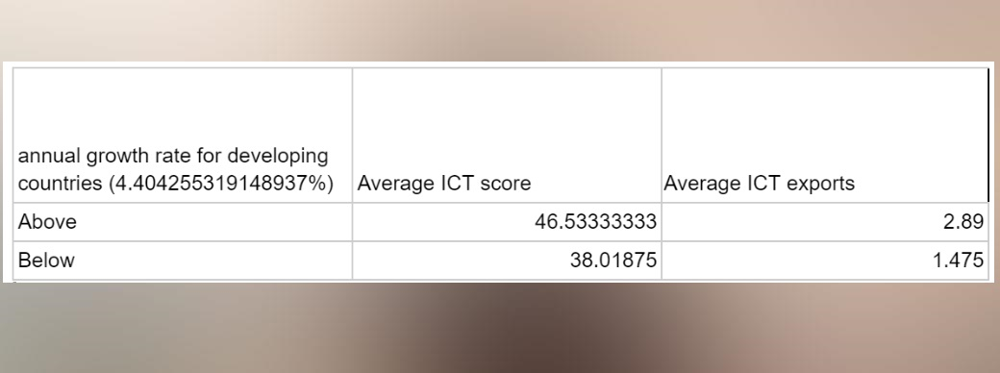

ICT technologies and GDP per captia growth
When comparing developing countries' Global Innovation Index scoring for ICT infrastructure against their global GDP ranking, there is correlation in a linear line: the higher ICT infrastructure score, the higher ranking in a country's GDP per capita. The GDP per capita in a country ranks the average GDP per citizen in a country, so countries that have better ICT infrastructure means more economically well off citizens overall are, which leads to a higher standard of life.
This is corroborated with the fact that the annual growth of GDP per capita for developing countries of 4.4%, gathered by the GDP annual growth percentage compared to developing countries and averaging it, the data shows a split between countries above the annual growth rate typically have a higher score in their national ICT score and ICT services exported in trade. The ICT score represents a combination of ICT access, and participation from the government and the country's citizens weighted in a 0 to 100 range when compared to all sovereign countries, the higher the score the better usage of ICT technology is used by a country. The chart shows countries who invest into ICT infrastructure through government programs or countries with already developed ICT infrastructure to the point where they can export their services usually tend to have higher annual economic growth than average.
link for data sheet: google sheet